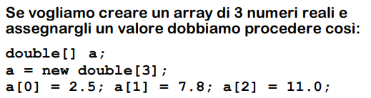
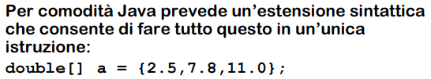
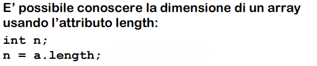
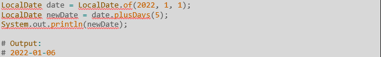

Array
Un array in Java è una struttura di dati che può contenere un numero fisso di elementi dello stesso tipo.
  Esempio di utilizzo:
int[] numeri = {1, 2, 3, 4, 5};Esempio pratico:
int[] numeri = {1, 2, 3, 4, 5};
for (int i = 0; i < numeri.length; i++) {
System.out.println("Elemento all'indice " + i + ": " + numeri[i]);
}String
La classe String in Java rappresenta una sequenza di caratteri. È una classe immutabile, il che significa che una volta creata, il suo valore non può essere modificato.
Esempio di utilizzo:
String saluto = "Ciao, mondo!";Esempio pratico:
String frase = "Programmare in Java è divertente!";
System.out.println("Lunghezza della frase: " + frase.length());
System.out.println("Carattere all'indice 5: " + frase.charAt(5));
System.out.println("Sottostringa (11, 15): " + frase.substring(11, 15));ArrayList
La classe ArrayList è una implementazione della lista dinamica in Java, che può crescere e diminuire di dimensioni automaticamente.
Esempio di utilizzo:
ArrayList<String> lista = new ArrayList<>();
lista.add("Elemento 1");
lista.add("Elemento 2");Esempio pratico:
ArrayList<String> frutti = new ArrayList<>();
frutti.add("Mela");
frutti.add("Banana");
frutti.add("Arancia");
System.out.println("Lista dei frutti: " + frutti);
frutti.remove("Banana");
System.out.println("Dopo aver rimosso Banana: " + frutti);
System.out.println("Il primo frutto è: " + frutti.get(0)); //con il metodo get ottengo la variabile posta alla posizione messa nelle parentesiLocalDate
LocalDate è una classe di Java che rappresenta una data senza la componente di tempo. Fa parte del package java.time.
Esempio di utilizzo:
LocalDate oggi = LocalDate.now();Esempio pratico:
LocalDate oggi = LocalDate.now() //metodo che ritorna la data attuale;
LocalDate dataNascita = LocalDate.of(1990, 5, 23);
Period periodo = Period.between(dataNascita, oggi);
System.out.println("Oggi è: " + oggi);
System.out.println("Data di nascita: " + dataNascita);
System.out.println("Età: " + periodo.getYears() + " anni");Altro esempio ma utilizzando il metodo plusDays:
LocalDateTime
LocalDateTime è una classe di Java che rappresenta una data con una componente di tempo, ma senza fuso orario. Fa parte del package java.time.
Esempio di utilizzo:
LocalDateTime adesso = LocalDateTime.now();Esempio pratico:
LocalDateTime adesso = LocalDateTime.now();
LocalDateTime specifico = LocalDateTime.of(2024, 12, 25, 10, 30);
System.out.println("Data e ora attuali: " + adesso);
System.out.println("Data e ora specifiche: " + specifico);Collections
La classe Collections fornisce metodi statici per operare su o restituire collezioni. Include operazioni come ordinamento e ricerca.
Esempio di utilizzo:
List<String> lista = new ArrayList<>();
lista.add("C");
lista.add("A");
lista.add("B");
Collections.sort(lista); // Ordina la lista in ordine crescente, è in grado di valutare in che modo ordinare:
se è String ordina per ordine alfabetico, se è int ordina per ordine di grandezzaEsempio pratico:
List<String> nomi = new ArrayList<>();
nomi.add("Chiara");
nomi.add("Alessio");
nomi.add("Bianca");
System.out.println("Lista originale: " + nomi);
Collections.sort(nomi);
System.out.println("Lista ordinata: " + nomi);
Collections.reverse(nomi);
System.out.println("Lista in ordine inverso: " + nomi);
String nome = "Bianca";
int posizione = Collections.binarySearch(nomi, nome);
System.out.println("Posizione di " + nome + ": " + posizione);